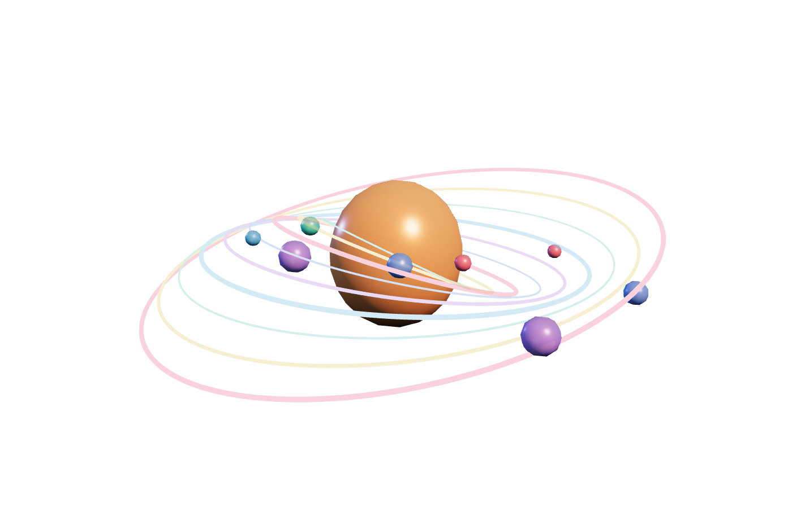

01 · astronomical
Orbital
How can a spatial instrument show nested orbital families?
src/main.ts
function orbital(){
for(let i=0;i<9;i++){const ring=new THREE.Mesh(new THREE.TorusGeometry(1.1+i*.29,.012+(i%3)*.008,10,180),new THREE.MeshBasicMaterial({color:colors[i%6],transparent:true,opacity:.42}));ring.rotation.x=Math.PI/2.4+i*.045;ring.rotation.y=-.35+i*.08;root.add(ring);const orb=new THREE.Mesh(new THREE.IcosahedronGeometry(.11+(i%3)*.045,1),material(colors[(i+2)%6]));const a=.72+i*.84;orb.position.set(Math.cos(a)*(1.1+i*.29),Math.sin(a)*.28,Math.sin(a)*(1.1+i*.29));root.add(orb)}
const core=new THREE.Mesh(new THREE.IcosahedronGeometry(.9,3),material(0xff9d66,.95));core.scale.set(1,1.12,1);root.add(core);root.rotation.x=.18;root.rotation.z=-.1;
}